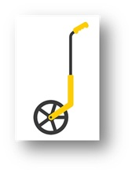
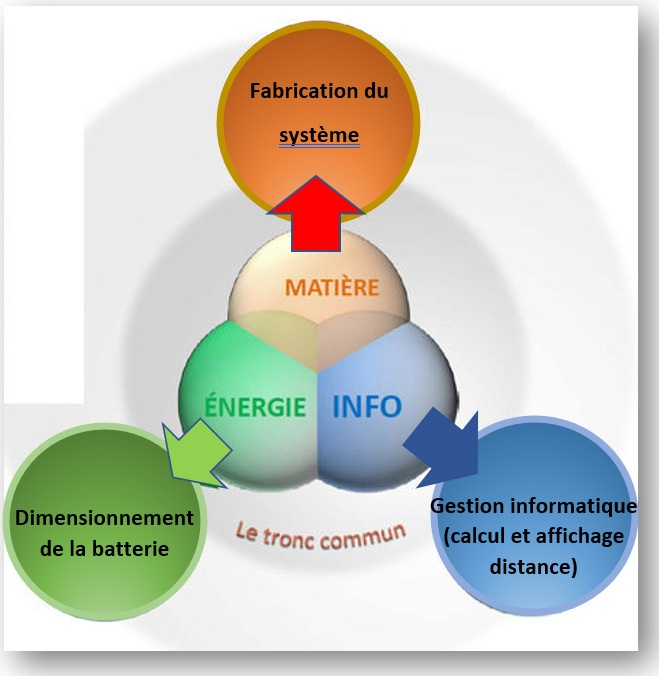

Objectif : Etudier et réaliser une roue de mesure


Avant l’implantation d’une maison ou pour d’autres travaux de mesure, les géomètres ou métreurs peuvent utiliser une roue de mesure (voir image ci-dessus).
Dans le cadre de votre projet vous devrez réaliser une roue de mesure qui permette de calculer et d’afficher une distance au cm près. L’affichage sera assuré par un afficheur 7 segments.
Un bouton d’initialisation permettra la mise à 0 de l’afficheur et un affichage en temps réel sera assuré sur l’afficheur 7 segments.
En groupe (commun à toutes les parties) :
Elaborer un cahier des charges avec les divers éléments en votre possession.
Carte mentale
Diagramme SysML
Vidéo de présentation du projet complet.
Réaliser une présentation de votre projet sous un format de 2 minutes de manière dynamique. (Depuis les croquis jusqu’au prototype en passant par la modélisation et test).
Soutenance orale.
A la fin du projet vous passerez une soutenance orale de 5 minutes. Vous présenterez votre démarche et une démonstration du fonctionnement de votre système.
Assurer l’étude et la fabrication du système et de la roue (en lien avec l’élève 2 pour la fixation de l’encodeur rotatif et l’élève 3 pour la fixation de la batterie)
Assurer l’étude de l’encodeur rotatif + gestion calcul de la distance et affichage (codage arduino)
Dimensionnement et choix de la batterie
Ordinateur + carte arduino + afficheur 7 segments
Encodeur rotatif E38S6G5-66B-G24N
https://www.mantech.co.za/Datasheets/Products/e38s_jz-yeba.pdf
Tuto arduino pour encodeur
Manche à balais
MDF
Divers petits matériels
Laser
Manuel (cutter, colle, tige en fer, …….)